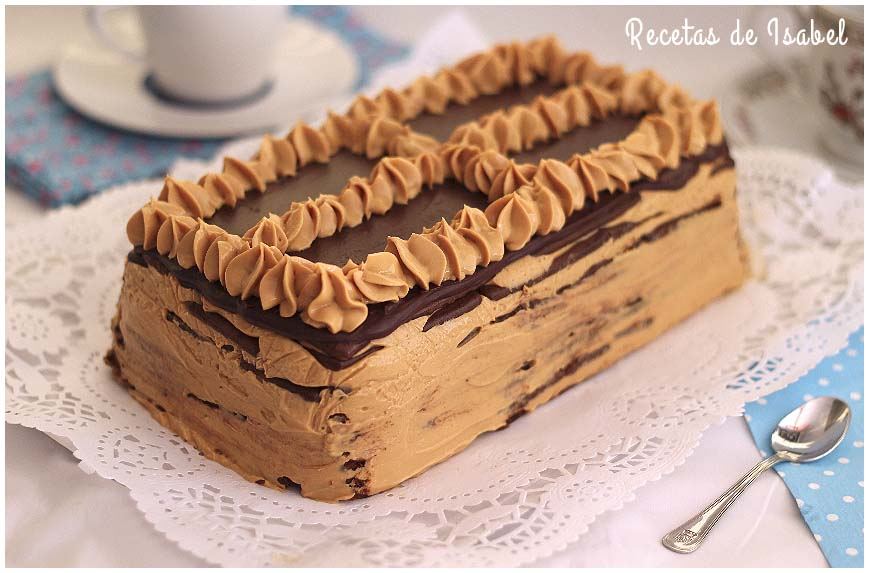
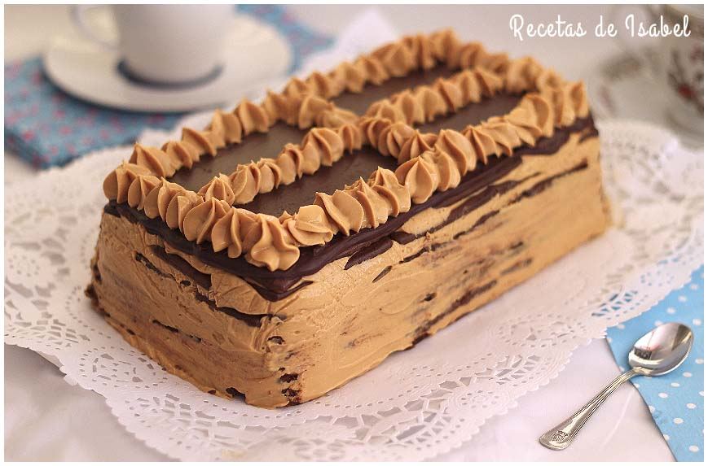
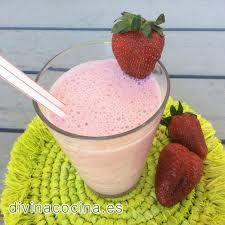
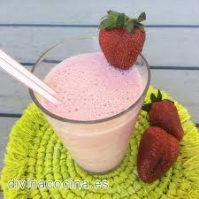

Breve presentación del portfolio

Primer parte del proyecto
En la primera parte, nos fue bien, hicimos todo lo que habìa que hacer, pero hubo algunas dificultades con el trabajo por el: se distraìan. Creemos que al final, ya que no nos distraìamo mas, trabajamos muy bien y cada uno hizo todo lo que tenìa que hacer. Esperamos que en la pròxima mitad de año trabajamos como trabajamos al final de la primera parte. Empezamos trabajando bien y lo seguimos haciendo. Ojala que no nos peliemos y terminemos bien.

Encuentro con los del 4to
El encuentro con cuarto nos sirvió. En algunas estaciones nos sirvió mucho y en otras ya savìamos lo que nos decìan. En la parte de diseño aprendimos todo lo que nos decían porque no sabíamos mucho de eso.

Descripción del logo
Nosotros hicimos el nombre del grupo con las iniciales de cada uno y lo pusimos en el logo. Después pusimos un círculo de color celeste y que fue creado en 2019 en letra negra. En el medio del círculo pusimos un tenedor y un cuchillo. El Slogan nuestro que nos inventamos entre todos se llama “ Eating differently is enjoying live ”
Encuentro con 6to año Visión y Misión
En una hora de Arte, un chico de cada grupo se fue al Hall Germania con los chicos de 6to año y Melina, a escuchar y aprender sobre la misión y visión de una empresa. Esa charla nos sirvió para que podamos hacer una parte del proyecto. Kolya fue el encargado de tomar apuntes. Estaba un poco distraído a si que no pudo tomar los apuntes necesarios. Con ayuda de todos pudimos entender lo de la charla y hacer una actividad del proyecto.
Descripción del cálculo de costos y precios finales por plato
En las dos primeras horas del Martes nos encontramos con los de sexto año y nos explicaron cómo tener ganancias en los platos que tenemos. En algunos platos les pusimos el setenta por ciento y a otros el veinte porque era re caro.
Descripción del video tutorial
Para el video nos encontramos en la casa de Max y preparamos una chocotorta. Nos repartimos los costos de los ingredientes y las tareas: Loren y Kolya iban mojando las chocolinas en la leche, Franca y Max revolvieron el dulce de leche con el casancrem, Olivia (con ayuda de todos) fue armando la torta. Cuando terminamos, la pusimos a enfriar en el freezer. ¡¡¡Salio riquisima!!!


 

 
